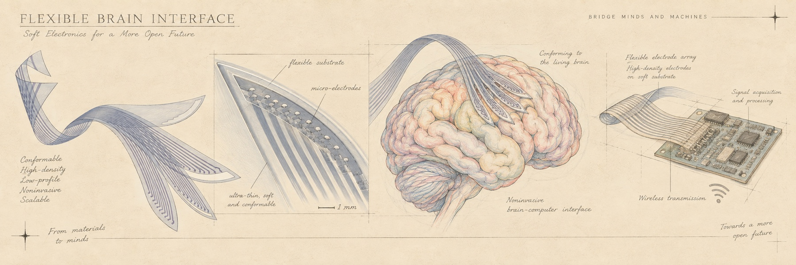

02
PI · 导师
张致同
ZHANG ZHITONG
研究覆盖脑机接口系统、先进神经电子界面、可穿戴传感器及系统、脑电信号解码及脑机大模型。工作发表于 Nature、Science Advances 投稿及 IEEE MEMS、TRANSDUCERS、MicroTAS 等会议，两获 IEEE MEMS 最佳论文提名。
2025
IEEE MEMS 最佳论文提名奖
2022
IEEE MEMS 最佳论文提名奖
2020
北京市优秀毕业生 · 五四奖章（北京航空航天大学）
2019
国家奖学金
2018
国家奖学金


03
RESEARCH · 研究方向与项目负责人
从一个电极，
延伸到每一项具体工作
Ⅰ
脑机接口系统
BCI SYSTEMS构建植入式与穿戴式脑机接口系统：从高通量柔性电极阵列、低噪声前端，到在体长期稳定记录与实时解码闭环。
张LEAD
张致同 PI
方向负责人 · 电极与系统集成
- All-Polymer 神经电极 · 慢性在体记录 Nature (submitted)
- 定制化 3D 植入电极 · 匹配神经组织解剖 Sci. Adv. (submitted)
- TransFlex 多臂可变刚度植入电极 TRANSDUCERS 2025
Ⅱ
先进神经电子界面
NEURAL INTERFACESelectrode 与组织的界面工程：材料、结构与文化。
张LEAD
张致同 PI
方向负责人 · 界面材料与结构
- VariDepth (VD-NEA) · 立体掩膜实现任意电极深度 IEEE MEMS 2025 · 提名
- FlexConnect · 柔性通用引出与键合界面 MicroTAS 2024 / JCK 2024
- 环形微针阵列 · 发上 EEG 干电极 IEEE MEMS 2021
128-CH DRY EEG · MK.IIN SERVICE ●
- ELECTRODE
- 干式 · 免导电膏
- CHANNELS
- 128 · 世界最高密度
- WEAR TIME
- ≤ 5 min
- UNIT
- 64 ch / 3×3 cm²
Ⅲ
可穿戴传感器及系统
WEARABLE SENSING贴着皮肤的柔性传感：把测量穿戴在身上。
张LEAD
张致同 PI
方向负责人 · 柔性传感
- FAICS 环形叉指电容传感 · 接近/压力 IEEE MEMS 2022
- 铂基穿孔呼吸传感器 · 连续监测 Micromachines 2022
Ⅳ
脑电解码及脑机大模型
DECODING & MODEL从头皮到皮层内：解码算法、脑基础模型与疾病辅助诊断。
刘BCI 2026
刘鼎坤
脑机接口多模态大模型 · 竞赛主力
Ⅴ
EEG 辅助诊断与脑基础模型
NEURODIAG AI面向神经精神疾病的 EEG 辅助诊断：跨被试小样本适配、情绪解码基础模型、脑卒中辅助诊疗（宣武医院合作）。
王AAAI 2027
王君逸
EEG 基础模型 · 跨被试适配 / 持续学习
- EEG 基础模型跨被试小样本提示微调 · Training-free AAAI 2027 (under review)
刘EMOTION
刘丽华
情绪脑机接口 · GNN-Mamba 基础模型
- 脑机接口情绪解码基础模型 · GNN-Mamba 时空联合
孙MSViT
孙钰晓
神经退行性疾病 · 多智能体辅助诊疗
- 基于高密度脑机接口的脑卒中辅助诊疗 · 宣武医院合作
Ⅵ
类脑智能与在线学习
BRAIN-INSPIRED脉冲神经网络的在线学习与表征漂移；AI 自主科研共生平台。
沈SNN
沈思成
类脑在线学习 · Spiking Transformer
- Spiking Transformer · 在线学习算法集成与新一代架构
马AGENT
马晓猛
AI 自主科研 · Meta Research 平台
- Meta Research · AI 自主科研循环平台
Ⅶ
眼电交互与可穿戴神经接口
EOG INTERFACE仅双通道眼电(EOG)的实时交互：6 分类手势指令、跨佩戴 81.7%、CPU 1.2ms/跳——把先验逻辑交给模型学习。
李ICLR 2027
李文宇
眼电交互 ACED · 可穿戴神经接口
- ACED · 自适应因果检测架构，Re-wear-Robust
- 自然场景基线漂移建模 · 先验逻辑信号化
- 延迟 668–940 ms · 200ms 节拍 160 倍算力余量